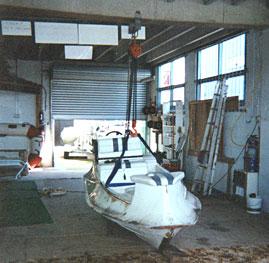

Punctures and tears
From a small hole to a substantial tear. Patched properly with the right adhesive system for the fabric, not a generic kit.
Repairs
Owners write boats off far too early. Before you replace anything, let someone who repairs inflatables for a living look at it.
Any brand, Hypalon or PVC, glued or welded seams.
From a small hole to a substantial tear. Patched properly with the right adhesive system for the fabric, not a generic kit.
Seams let go with age, heat and UV. They are resealable — and a failing seam is a much smaller job caught early than caught at sea.
Slow deflation is usually a valve, not the fabric. Valves are tightened, serviced or replaced.
Loose transoms and soft or leaking floors — the structural problems that decide whether a hull is worth keeping.
Chalky, faded, going hard to the touch. We will tell you honestly whether it is cosmetic or whether the fabric has had its life.
Rubbing strake, grab lines, handles, D-rings, seats and upholstery refitted or replaced.
If the fabric itself is past saving, the answer is a new tube set rather than more patches — and we will say so rather than sell you repairs that won't hold.
Tubes are only half the boat. We repair what's underneath them too.
Welding, riveting, structural repair, and fitting additional accessories to your requirements. Damage to an alloy hull is very often repairable where an owner has assumed it isn't.
We have worked with fibreglass for as long as the company has existed and can match any type of glass, gelcoat and colour repair — including the collision and impact damage that makes a boat look finished when it isn't.


Damage claims
Collision, storm and trailering damage is routine work here. If you are making a claim, we can assess the boat and put the damage and the proposed repair in writing for your insurer or assessor.
Assessors and brokers: we are happy to take instructions directly and report back to you. Get in touch and we will tell you what we need to see.
Photograph it in daylight, get the whole boat in one shot and the damage in another, and send them over. It is usually enough for us to tell you whether it's a repair, a retube, or a phone call you're glad you made.